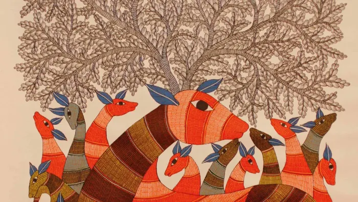

Gond Painting
A native art form of Madhya Pradesh, Gond paintings are mostly themed on animals and birds. Practised by the Gond tribes, this art form is believed to be 1400 years old. .
See more
Madhubani Painting
This art is also known as Mithila art, and it originated in the kingdom of Janak in Nepal and in present-day Bihar. This art form was not known to the rest of the world until the 1930s, when it was discovered after an earthquake.
See more
Kathakali
Kathakali ( IAST: Kathakaḷi Malayalam: കതകളി) is a major form of classical Indian dance.[1] It is a "story play" genre of art, but one distinguished by the elaborately colourful make-up and costumes of the traditional male actor-dancers..
See more